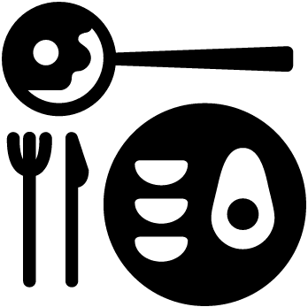

Friday, June 22nd, Ballroom E.
at CVPR 2018 in Salt Lake City, Utah
What is this event about?
Wondering what it takes to be a good CVPR reviewer? A good Area Chair? A good author? Wondering what you should be thinking about when you are asked to vote on a variety of motions at the PAMI TC meeting? How you can help maintain a good representation of various demographic groups? How you can stay organized, collaborative.. just overall, how you should approach being a good citizen of the CVPR community? Come listen to our invited speakers and participate in the panel discussion!The culture of our community plays a critical role in how the science we do gets disseminated; and as a result, how the work we do makes impact in the world. What the community values significantly affects many decisions that influence people's careers in significant ways. And this in turn, influences the kind of work we as a community continue to do over time. But these aspects rarely get discussed in forums that are widely accessible to our rapidly growing community.
This event on how to be a good citizen of the CVPR community will provide a forum for these conversations.
Speakers
Adriana Kovashka
University of Pittsburgh
Bill Freeman
Google & MIT

Cordelia Schmid
INRIA & Google
David Forsyth
UIUC

Derek Hoiem
Reconstruct & UIUC

Devi Parikh
FAIR & Georgia Tech
Georgia Gkioxari
Facebook AI Research

Jitendra Malik
FAIR & UC Berkeley
Katsushi Ikeuchi
MSR & Univ. of Tokyo
Kristen Grauman
UT Austin
Michael Brown
York University
Sven Dickinson
University of Toronto
Timnit Gebru
Microsoft Research
Vladlen Koltun
Intel
Schedule
Friday, June 22nd, Ballroom E.Morning session I
10:10 to 10:30
10:30 to 11:00
Morning break
Coffee
Morning session II
12:10 to 1:30

Lunch
On your own
Afternoon session I
3:30 to 4:00
Afternoon break
Coffee
Afternoon session II
Organizers
Devi Parikh
FAIR & Georgia Tech
Dhruv Batra
FAIR & Georgia Tech
Acknowledgements
Thanks to Abhishek Das and Aishwarya Agrawal for expressing sufficient enthusiasm to attend such an event that made it seem worth organizing. Additional thanks to Abhishek for the webpage format.